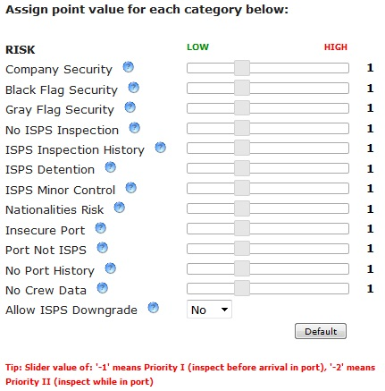
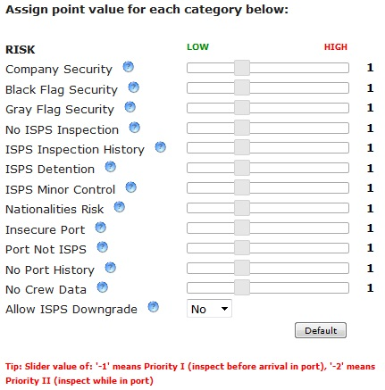
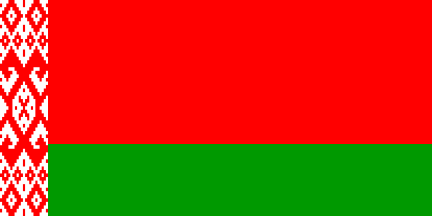
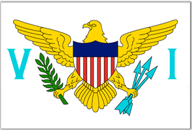

Tutorial
The RISK Configuration Tool will enable you to specify how you want the RISK score calculated.
Specify RISK score settings
Using the tabs on the navigation bar, specify how you want to weigh each security and safety field. Click on the Security tab to begin.

The Security tab panel will be displayed. Specify boundaries for Priority I and Priority II using the text boxes. Priority I recommends inspecting vessel before arrival in port. Priority II recommends inspecting vessel while in port. You can also specify the max value for the sliders in "Max Points". Click on the "Set" button to set these changes.

Adjust the sliders left or right to the desired levels. To signify if a field is more important in calculating the risk score, move the slider to the right. To signify if a field is less important in calculating the risk score, move the slider to the left. To specify a field as Priority I or II, move the slider to -1 or -2, respectively. The question mark besides each field name will display a definition for that term.
Do the same for the Safety tab panel.
Next, specify which set of Black-Gray-White MOU list to use by selecting the drop-down menu.


Specify which nationalities to flag when calculating the Risk score by adding it to the Nationalities list. To do this, click on the Nationalities List tab.

The Nationalities List tab will list all nationalities available to add. Drag and drop the desired nationality from the list on the left to the list on the right. If the desired nationality is not found from the available list, you may add one by typing it into the text box on the bottom and clicking the "Add to List" button. To add all nationalities to the list, click on the "Add All" button. To remove all nationalities from the list, click on the "Clear All" button.
The Security tab panel will be displayed. Specify boundaries for Priority I and Priority II using the text boxes. Priority I recommends inspecting vessel before arrival in port. Priority II recommends inspecting vessel while in port. You can also specify the max value for the sliders in "Max Points". Click on the "Set" button to set these changes.

Adjust the sliders left or right to the desired levels. To signify if a field is more important in calculating the risk score, move the slider to the right. To signify if a field is less important in calculating the risk score, move the slider to the left. To specify a field as Priority I or II, move the slider to -1 or -2, respectively. The question mark besides each field name will display a definition for that term.
Do the same for the Safety tab panel.
Next, specify which set of Black-Gray-White MOU list to use by selecting the drop-down menu.
Specify which nationalities to flag when calculating the Risk score by adding it to the Nationalities list. To do this, click on the Nationalities List tab.
The Nationalities List tab will list all nationalities available to add. Drag and drop the desired nationality from the list on the left to the list on the right. If the desired nationality is not found from the available list, you may add one by typing it into the text box on the bottom and clicking the "Add to List" button. To add all nationalities to the list, click on the "Add All" button. To remove all nationalities from the list, click on the "Clear All" button.
Request RISK score calculation
After you are done adjusting the RISK score settings, click on the Summary tab.

This will summarize your settings as well as a choice to save these settings or request the RISK score to be calculated.

When you are satisfied with the results, click on the "Calculate" button to request the RISK score to be calculated using the current settings. A summary will be displayed once the calculations are done.
You may also save the settings to load at a later time by clicking on the "Save" button. It will prompt you to enter a name for the entry. To access your saved entries click on the History tab on the navigation menu.

This will summarize your settings as well as a choice to save these settings or request the RISK score to be calculated.
When you are satisfied with the results, click on the "Calculate" button to request the RISK score to be calculated using the current settings. A summary will be displayed once the calculations are done.
You may also save the settings to load at a later time by clicking on the "Save" button. It will prompt you to enter a name for the entry. To access your saved entries click on the History tab on the navigation menu.
Save RISK score settings
To access saved RISK score settings select the History tab. This will bring up the History panel.
All saved entries will be displayed. You have the option of loading, renaming, or removing each saved entry. Loading an entry will load the saved settings but will not calculate the RISK score. You must press the "Calculate" button on the Summary panel to see the RISK score.
All saved entries will be displayed. You have the option of loading, renaming, or removing each saved entry. Loading an entry will load the saved settings but will not calculate the RISK score. You must press the "Calculate" button on the Summary panel to see the RISK score.
ISPS Compliance
Specify point value definition:
ISPS 1 and 2 Boundary
.")
ISPS 2 and 3 Boundary
Max Points
Assign point value for each category below:
Tip: Slider value of: '-1' means Priority I (inspect before arrival in port), '-2' means Priority II (inspect while in port)
PSC Safety & Environmental Compliance
Specify point value definition:
PSC 1 and 2 Boundary
PSC 2 and 3 Boundary
Max Points
Assign point value for each category below:
Tip: Slider value of: '-1' means Priority I (inspect before arrival in port), '-2' means Priority II (inspect while in port)
MOU List
Select which set of Black-Gray-White list to use:
Nationalities List
Available:
Added to List:
- Afghan
- Åland Islander
- Albanian
- Algerian
- American
- Andorran
- Angolan

- Anguillan
- Antiguan
- Argentine

- Armenian
- Australian
- Austrian
- Azerbaijani
- Bahamian
- Bangladeshi

- Barbadian
- Belarusian
- Belgian

- Belizean
- Beninese
- Bermudian
- Bhutanese

- Bolivian

- Bosnian
- Batswana
- Brazilian

- British
- British Virgin Islanders
- Bruneian
- Bulgarian
- Burkinabe
- Burmese
- Burundian
- Cambodian
- Cameroonian
- Canadian

- Cape Verdian
- Chadian
- Channel Islander
- Chilean
- Chinese
- Christmas Islander
- Cocos Islander
- Colombian

- Congolese
- Congolese (DRC)

- Costa Rican

- Croat

- Cuban

- Cypriot
- Czech/Czechoslavakian
- Dane
- Djibouti
- Dominican
- Dominican (Republic)
- Dutch
- East Timorese
- Ecuadorian
- Egyptian
- Emirati
- Equatorial Guinean
- Eritrean
- Estonian
- Ethioian

- Falkland Islander
- Faroese
- Fijian
- Filipino

- Finn

- French

- French Guianese
- Gambian
- Georgian
- German
- Ghanaian
- Gibraltarian
- Greek

- Greenlander
- Grenadan
- Guadeloupean

- Guatemalan
- Guinean
- Guinea-Bissauan
- Guyanese
- Haitian
- Honduran
- Hong Kong Chinese

- Hungarian

- Icelander

- Indian
- Indonesian
- Iranian
- Iraqi
- Irish
- Israeli
- Italian

- Ivorian

- Jamaican
- Japanese
- Jordanian
- Kazakhstani
- Kenyan
- Kiribati
- Kittian/Nevisian
- Korean, North
- Korean, South

- Kuwaiti

- Kyrgyz
- Laotian
- Latvian
- Lebanese
- Lesotho
- Liberian
- Libyan
- Liechtensteiner
- Lithuanian
- Luxembourger

- Macaun
- Macedonian
- Madagasy
- Madeiran
- Mahorais

- Malawian
- Malaysian
- Maldivian
- Malian
- Maltese
- Manx

- Marshallese
- Martinican

- Mauritanian
- Mauritian
- Mexican

- Micronesian

- Maldovan
- Monacan
- Mongolian
- Montserratian
- Montenegro
- Moroccan

- Mozambican
- Namibian
- Nauruan
- Nepalese
- New Zealander
- Nicaraguan
- Nigerian
- Norwegian

- Omani

- Pakistani
- Palauan
- Palestinian
- Panamanian
- Papua New Guinean

- Paraguayan
- Peruvian

- Pole
- Portuguese

- Puerto Rican
- Qatari
- Reunionese

- Romanian
- Russian
- Rwandan
- Salvadorian
- Samoan
- San Marinese
- Saudi Arabian

- Senegalese

- Serbian

- Seychellois
- Sierra Leonean
- Singaporean

- Slovak
- Slovene
- Solomon Islander
- Somali
- South African
- Spaniard
- Sri Lankan
- St Helenian
- St Lucian

- St Vincentian
- Sudanese
- Surinamer
- Swazi

- Swede
- Swiss

- Syrian
- Tahitian
- Taiwanese
- Tajik
- Tanzanian
- Thai

- Tongan
- Tongolese
- Trinidadian
- Tunisian
- Turk

- Turkmen
- Turks & Caicos Islanders
- Tuvaluan
- Ugandan
- Ukrainian

- Uruguayan

- Uzbek
- Vanuatian

- Venezuelan
- Vietnamese
- Virgin Islander
- Yemeni
- Zambian
- Zimbabwean